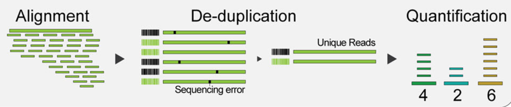

Experimental scRNA-seq workflow

Typical workflows including:
- Single cell dissociation
- tissue is digested
- Single cell isolation
- errors can occur that lead to empty droplets, doublets, multiplets, non-viables cells
- Library construction
- well or droplet contains the chemicals to break down the cell membrances
- intra cellular mRNA is captured, reverse-transcribed to cDNA molecules and amplified
- Uniqiue molecular identifed (UMI) allow us to distinguish between amplified copies of the same mRNA molecule and reads from separate mRNA molecules transcribed from the same gene
- Amplification before sequencing is to increase its probility of being measured
- Sequencing
- cDNA libraries are labelled with cellular barcodes
- libraries are pooled together
File formats produced by sequencing

Quality control of raw reads
Quality control is performed to ensure that the data quality is sufficient for downstream analysis. The QC can be performed in cell level, transcript level and count data directly.
To check the integrity of cel, cell QC is commonly performed based on three covariates:
- Count depth: the number of counts per barcode
- The number of genes per barcode
- The fraction of counts from mitochondrial genes per barcode
Make sure all cellular bacode data correspond to viable cells
all reads assigned to the same barcode may not correspond to reads from the cells as a barcode may mistakenly tag multiple cells (doublet) or may not tag any cells (empty droplet)
The distribution of these QC covariates are examined for outlier peaks that filtered out by thresholding. Condieration any of these three QC covariates in isolation can lead to misinterpretation of cellular signals. These thresholds shoule be set as permissive as possible to avoid filtering out viable cell populations unintentionally.
Cells with high a comparatively high fraction of mitochandrial counts maybe involved in respiratory process
Cells with low counts and/or genes may correspond to quiecent cells population
Cells with high counts maybe larger in size
- Perform QC by finding outlier peaks in the number of genes, the count depth and the fraction of mitochondrial reads. Consider these covariates jointly instead of separtely
- Be as permissive of QC thresholding as possible, and revisit QC if downstream clustering cannot be interpreted
- If the distribution of QC covariates differ between samples, QC thresholds should be determined separately for each sample to account for sample quality differences.
Mapping reads to cellular barcodes and origin mRNA molecules

Tools that same as those used in bulk RNA-seq are available for this procedure, including:
- Burrows-Wheeler Aligner (BWA)
- STAR
- Kallisto
- Sailfish
- Salmon
Only reads that map to exonic loci with high mapping quality are considered for generation of the gene expression matrix.
Normalization for quantification of expression
Why need to do normaliztion?
Each count in a count matrix represents the successful capture, reverse transciption, and sequencing of a molecule of cellular mRNA. Count depths for identical cellss can differ due to the variability inherent in each of these steps. These variables are usually difficult to estimate and thus typically modeled as fixed effects. Thus, when gene expression is compared betwen cells based on count data, any difference may have arisen solely due to sampling effects. So Normalization address this issue by scaling count data to obtain correct relative gene expression abundances between cells.

These three metrics attempt to normalize for sequencing depth and gene length. Here’s how you do it for RPKM:
- Count up the total reads in a sample and divide that number by 1,000,000 – this is our “per million” scaling factor.
- Divide the read counts by the “per million” scaling factor. This normalizes for sequencing depth, giving you reads per million (RPM)
- Divide the RPM values by the length of the gene, in kilobases. This gives you RPKM.
FPKM is very similar to RPKM. RPKM was made for single-end RNA-seq, where every read corresponded to a single fragment that was sequenced. FPKM was made for paired-end RNA-seq. With paired-end RNA-seq, two reads can correspond to a single fragment, or, if one read in the pair did not map, one read can correspond to a single fragment. The only difference between RPKM and FPKM is that FPKM takes into account that two reads can map to one fragment (and so it doesn’t count this fragment twice).

TPM is very similar to RPKM and FPKM. The only difference is the order of operations. Here’s how you calculate TPM:
- Divide the read counts by the length of each gene in kilobases. This gives you reads per kilobase (RPK).
- Count up all the RPK values in a sample and divide this number by 1,000,000. This is your “per million” scaling factor.
- Divide the RPK values by the “per million” scaling factor. This gives you TPM.
When calculating TPM, the only difference is that you normalize for gene length first, and then normalize for sequencing depth second. However, the effects of this difference are quite profound.
When you use TPM, the sum of all TPMs in each sample are the same. This makes it easier to compare the proportion of reads that mapped to a gene in each sample. In contrast, with RPKM and FPKM, the sum of the normalized reads in each sample may be different, and this makes it harder to compare samples directly.
Here’s an example. If the TPM for gene A in Sample 1 is 3.33 and the TPM in sample B is 3.33, then I know that the exact same proportion of total reads mapped to gene A in both samples. This is because the sum of the TPMs in both samples always add up to the same number (so the denominator required to calculate the proportions is the same, regardless of what sample you are looking at.)
With RPKM or FPKM, the sum of normalized reads in each sample can be different. Thus, if the RPKM for gene A in Sample 1 is 3.33 and the RPKM in Sample 2 is 3.33, I would not know if the same proportion of reads in Sample 1 mapped to gene A as in Sample 2. This is because the denominator required to calculate the proportion could be different for the two samples.
Using RPKM/FPKM normalization, the total number of RPKM/FPKM normalized counts for each sample will be different. Therefore, you cannot compare the normalized counts for each gene equally between samples.
| Normalization method | Description | Accounted factors | Recommendations for use |
|---|---|---|---|
| CPM (counts per million) | counts scaled by total number of reads | sequencing depth | gene count comparisons between replicates of the same samplegroup; NOT for within sample comparisons or DE analysis |
| TPM (transcripts per kilobase million) | counts per length of transcript (kb) per million reads mapped | sequencing depth and gene length | gene count comparisons within a sample or between samples of the same sample group; NOT for DE analysis |
| RPKM/FPKM (reads/fragments per kilobase of exon per million reads/fragments mapped) | similar to TPM | sequencing depth and gene length | gene count comparisons between genes within a sample; NOT for between sample comparisons or DE analysis |
| DESeq2’s median of ratios [1] | counts divided by sample-specific size factors determined by median ratio of gene counts relative to geometric mean per gene | sequencing depth and RNA composition | gene count comparisons between samples and for DE analysis; NOT for within sample comparisons |
| EdgeR’s trimmed mean of M values (TMM) [2] | uses a weighted trimmed mean of the log expression ratios between samples | sequencing depth, RNA composition | gene count comparisons between samples and for DE analysis; NOT for within sample comparisons |
Source - StatQuest, RPKM, FPKM and TPM, clearly explained, Count normalization with DESeq2
- While TPM and RPKM/FPKM normalization methods both account for sequencing depth and gene length, RPKM/FPKM are not recommended. The reason is that the normalized count values output by the RPKM/FPKM method are not comparable between samples.
- Normalized data should be log(x=1)-transformed for use with downstream analysis methods that assume data are normally distributed
Estimate confounding factors
The observed read counts are affected by a combination of different factors, including biological variables and technical noise.
Batch effects, systematic differences that are unrelated to any biological variation and result from sample preparation conditions, are often prominent.

Data correction and integration
Normalized data may still contain unwanted variability. Data correction targets further technical and biological variability covariates suchs as
Biological effects: - Cell cycle effects on transcriptome - mitochondrial gene expression
Technical effects: - Count depth - Batch effect - Dropout (noise)
Consider the correction for biological and technical covariates separtely as these are used for different purpose and present unique challenge.
Feature selection and dimensionality reduction
Cluster analysis
After pre-processing, we can perform downstream anslysis to extract biological insights and describe the underlying biological system. These descriptions are obtained by fitting interpretable models to the data.
- Group of cells with similary gene expression profiles representing cell-type clusters
- Small changes in gene expression between similar cells denoting continuous (differentiation) trajectories
- Genes with correlated expression profiles indicating co-regulation
Identifying Clusters
Cluster analysis methods attempt to explain the heterogenity in the data based on a categorization of cells into groups.
Clusters are obtained by grouping cells based on the similarity of their gene expression profiles.
Similarity scores:
- Euclidean distance
- Clustering algorithms
- K-means
- Community detection
- K-Nearest Neighbour
Cluster annotation
Marker genes characterize the cluster and are used to annotate it with a meanningful biological label.
- It is not always clear what constitutes a cell type
- cells of the same cell type in different states maybe detected in separte clusters
- Reference databases
- Marker genes from the literature
- Data-drived marker genes
- Focus on up-regulated genes in the cluster as marker genes are expected to have strong differential expression effects
- rank-sum test or t-test to rank genes
- Top-ranked genes are regarded as marker genes
P-values are often inflated, which can lead to an overestimation of the number of marker genes. However, the ranking of genes based on p-values is unaffected
Compositional analysis
Compositional data analysis revolves around the proporations of cells that fall into each cell-identity cluster.
Trajectory inference
Trajectory analysis in the data are regarded as a snapshot of a dynamic process, which investigate the underlying process.
The biological processes that drive the development of the observed heterogenity are continuous process.
Trajectory inference methods interpret single-cell data as a snapshot of a continuous process. This process is reconstructed by finding paths through cellular space that minimize transcriptional changes between neighbouring cells. The ordering of cells along these paths is described by a pseudotime variable. While this variable is related to transcriptional distances from a root cell, tt is often inter- preted as a proxy for developmental time
Gene-level downstream analysis
Differential expression testing
DE is to answer the question whether any genes are differntially expressed between two experimental conditions
Tools are commonly used:
- DESeq2
- EdgeR
- limma
- DE testing should not be performed on corrected data (denoised, batch corrected, etc), but instead on measured data with technical covariates included in the model
Gene set analsysis
To further interpret the long list of candidate genes that maybe differentially expressed between treated and control cells, we can group the genes into sets based on characteristics and testing whether these characteristics are overrepresented in the candidate gene list.
Common biological processes labels:
- MSigDB
- Gene Ontology
- KEGG
- Reactome
Gene regulatory networks
The expression level of a gene is determined by a complex interplay of regulatory interactions with other genes and small molecules.
Gene regulatory network inference is performed based on measurement of gene co-expression such as correlation, mutual information, or via regression models.
Analysis platforms
- Scater (R, Strength in QC and pre-processing)
- Seurat (R, Comprehensive)
- scanpy (Python-based)
Reference
- Single-cell RNA-seq: raw sequencing data to counts
- File formats produced by sequencing
- RNA-seqlopedia - Created by the Univ. of Orgeon, this is a great resource for understanding the entire RNAseq workflow.
- SequencEnG - An interactive learning resource for next-generation sequencing (NGS) techniques
- Next-Generation Sequencing Analysis - provide hands on experience with analyzing next generation sequencing. Standard pipelines are presented that provide the user with and step-by-step guide to using state of the art bioinformatics tools
- Single Cell Gene Expression
- The Essence of scRNA-Seq Clustering: Why and How to Do it Right
- How to Use t-SNE Effectively
- Ten quick tips for effective dimensionality reduction
- Hypergeometric test and Fisher’s exact test
- Bioinformatics Training at the Harvard Chan Bioinformatics Core
- ANALYSIS OF SINGLE CELL RNA-SEQ DATA